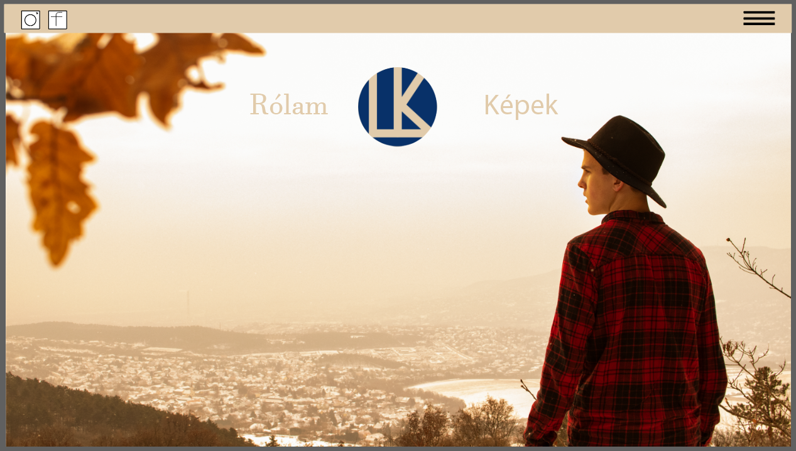
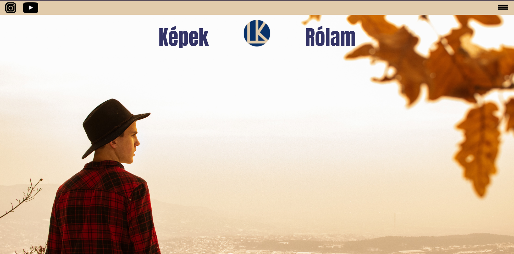
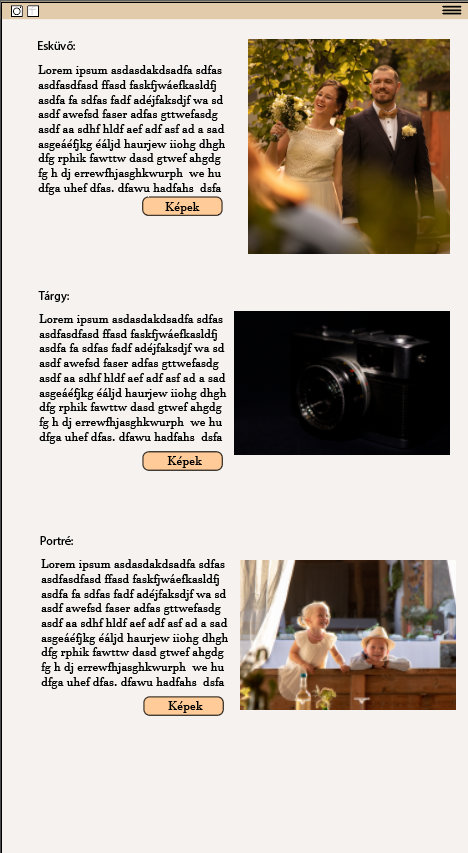
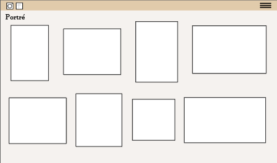

Weboldal terv
Nagyon szeretem a kreatív feladatokat, és ezekben a maximumra törekszem. Tudtam, hogy ez a feladat jó lehetőség arra, hogy a fotóimnak készíthessek egy kis albumot/oldalt, ezért megnéztem pár fotós honlapját és tőlük merítettem ihletet. Miután volt egy körülbelüli elképzelés a fejemben arról, hogy hogyan akarom, hogy kinézzen, akkor gyorsan csináltam egy tervet, és nagy lelkesen belecsaptam a programozásba. A terv az volt, hogy lesz egy header rész, ahol közösségi oldalak linkjei és egy kis leugró menü. Középen a mainben szerettem volna a logómat és mellette két oldalt navigációs gombokat. Az egyik oldal a „Rólam” részre visz, ahol egy bemutatkozás található. A másik pedig egy oldalra, ahol a projektjeim leírásai találhatók, és innen tovább lehet ugrani a galériákba.
Kezdő oldal terv:
Kezdő oldal valóság:

A főmenü design-jából adódóan nem igazán tudtam hova tegyem a honlap készítését bemutató részt, ezért azt a lenyíló menübe helyeztem el. Remélem azért megtalálható.
Változások
Az eredeti elképzeléshez képest azért elég sok minden változott. Ahogy próbálgattam rájöttem, hogy valami sokkal jobban néz ki így, vagy úgy, vagy a reszponzivitás szólt bele a dolgokba. Ilyen volt például a galéria vagy a projekteket bemutató oldal is.


Tapasztalatok, összegzés
Meg kellett, hogy tapasztaljam, hogy sokkal jobban megérte volna egy részletes grafikai tervet csinálni és csak utána nekilátni a munkának, mint beleugrani a közepébe. A legtöbb dologról csak elképzelésem volt, hogy hogyan lehet megvalósítani, így rengeteg energia ment el arra, hogy különböző youtube tutorialokat vagy oldalakat néztem és próbáltam megtalálni a megoldást a felmerülő problémáimra. A legtöbb gondot a gridek kezelése okozta, de a végére már egész jól belejöttem. Nehéz volt átállni a programozó gondolkodásmódra és ez rengeteg időmbe és energiámba került. A végeredménnyel nem vagyok teljesen elégedett, de azért jó móka volt és sokat tanultam belőle. A következő pedig már biztos, hogy gyorsabb és jobb lesz.
Felhasznált oldalak:
youtube.com
https://html-css-js.com/css/generator/box-shadow/
https://www.google.com/search?q=color+picker&oq=colo&aqs=chrome.0.69i59l2j69i57j0i67l2j69i60j69i61l2.5388j0j4&sourceid=chrome&ie=UTF-8
https://fonts.google.com/
https://html-css-js.com/css/generator/box-shadow/
https://www.google.com/search?q=color+picker&oq=colo&aqs=chrome.0.69i59l2j69i57j0i67l2j69i60j69i61l2.5388j0j4&sourceid=chrome&ie=UTF-8
https://fonts.google.com/